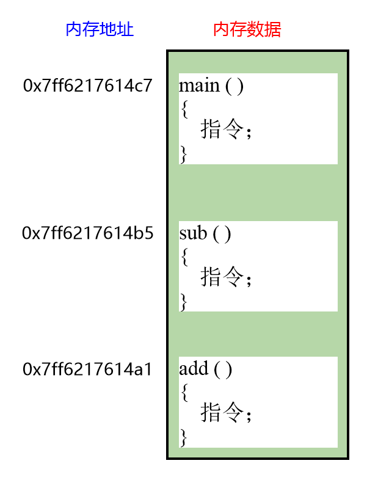
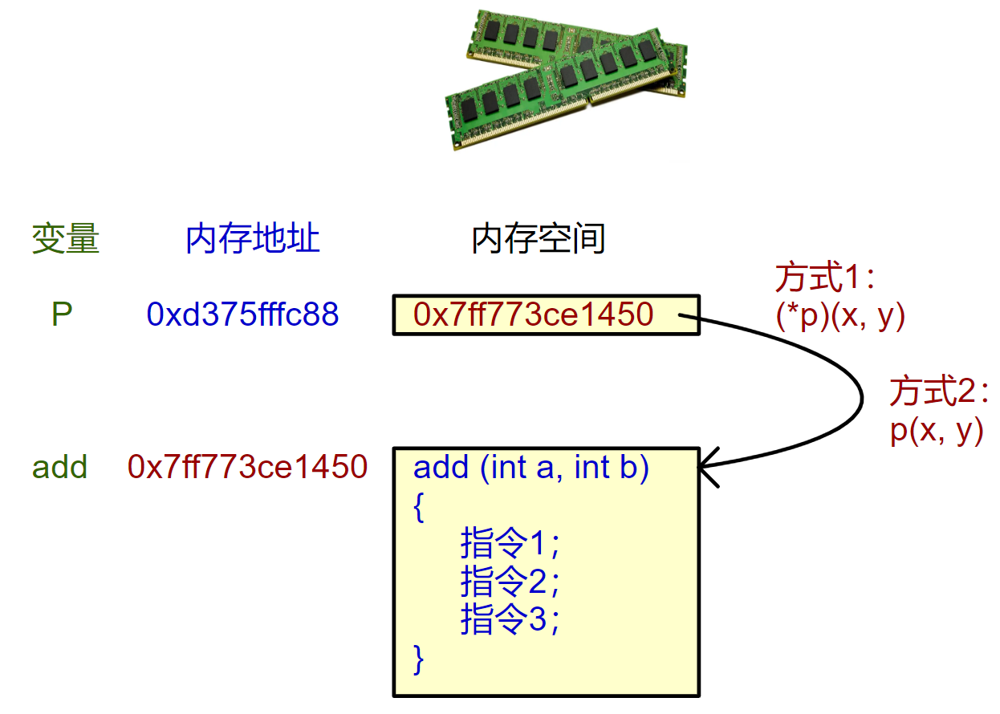

<!DOCTYPE lake>
<h1 data-lake-id="w6MYN" id="w6MYN"><span data-lake-id="u1c53761b" id="u1c53761b">1&gt; 函数的地址</span></h1><p data-lake-id="u73bd6762" id="u73bd6762"><span data-lake-id="uc14376dd" id="uc14376dd">函数是一段指令代码，编译器为函数分配一段内存空间存放指令代码，这段空间的</span><strong><span data-lake-id="u007dbf4d" id="u007dbf4d">起始地址</span></strong><span data-lake-id="u8708ca82" id="u8708ca82">作为函数的入口地址，用</span><strong><span data-lake-id="ub81d02c1" id="ub81d02c1" style="color: #DF2A3F">函数名</span></strong><span data-lake-id="u45d673d3" id="u45d673d3" style="color: #000000">这个符号</span><span data-lake-id="ub7c3d635" id="ub7c3d635">表示函数的地址， 类似数组名;</span></p><span class="yuque-card-unsupported">[codeblock]</span><p data-lake-id="u77e84c4a" id="u77e84c4a"></p><p data-lake-id="u7ab5b691" id="u7ab5b691"><span data-lake-id="u696cd238" id="u696cd238">函数名和数组名区别：</span></p><p data-lake-id="u30db34a4" id="u30db34a4"><span data-lake-id="u85237c74" id="u85237c74">函数名做右值时加不加&amp;都一样，是函数的地址（编译器定义）；<br/></span><span data-lake-id="ufdd8591d" id="ufdd8591d">数组名做右值时无&amp;是数组首元素地址，有&amp;是数组地址；</span></p><hr/><h1 data-lake-id="vmHWT" id="vmHWT"><span data-lake-id="u4175e981" id="u4175e981">2&gt; 定义 函数指针</span></h1><p data-lake-id="u291b10bc" id="u291b10bc"><span data-lake-id="ua31f3524" id="ua31f3524">功能需求：定义指针变量（函数指针），将函数的地址存起来；</span></p><span class="yuque-card-unsupported">[codeblock]</span><p data-lake-id="u5d567c3d" id="u5d567c3d"><br/></p><p data-lake-id="ubfbb9331" id="ubfbb9331"><span data-lake-id="u9a8a5af4" id="u9a8a5af4">格式：</span><strong><span data-lake-id="u8bb888b2" id="u8bb888b2">返回值类型</span></strong><span data-lake-id="ucd161cda" id="ucd161cda"> （</span><strong><span class="lake-fontsize-14" data-lake-id="u1164446d" id="u1164446d" style="color: #DF2A3F">*</span></strong><strong><span data-lake-id="ua2221b5a" id="ua2221b5a" style="color: #2F4BDA">函数指针变量名</span></strong><span data-lake-id="uc55af7e9" id="uc55af7e9">）（</span><strong><span data-lake-id="u6d53c03a" id="u6d53c03a" style="color: #5C8D07">函数参数类型</span></strong><span data-lake-id="uacce7553" id="uacce7553">）</span></p><p data-lake-id="u20953c28" id="u20953c28"><span data-lake-id="u8e28afb0" id="u8e28afb0">函数指针，使我们可以灵活调用，相同形式参数和返回值，功能不同的函数；</span></p><p data-lake-id="ua94433e7" id="ua94433e7"><span data-lake-id="uacabbba5" id="uacabbba5">​</span><br/></p><p data-lake-id="uc645b193" id="uc645b193"></p><hr/><p data-lake-id="ua6f4d915" id="ua6f4d915"><span class="lake-fontsize-16" data-lake-id="uacb36bf9" id="uacb36bf9" style="color: #DF2A3F">习题：分析复杂类型声明</span><span class="yuque-card-unsupported">[unicodeEmoji]</span></p><span class="yuque-card-unsupported">[codeblock]</span><p data-lake-id="u8cc2d00a" id="u8cc2d00a"></p><hr/><h1 data-lake-id="B2OfN" id="B2OfN"><span data-lake-id="u3301d66e" id="u3301d66e">3&gt; 使用 函数指针</span></h1><span class="yuque-card-unsupported">[codeblock]</span><a class="yuque-card-link" href="https://cdn.nlark.com/yuque/0/2024/jpeg/43021193/1725629659461-7f4440d0-ab92-4c5f-94b5-3ee7810b2436.jpeg" rel="noopener noreferrer" target="_blank">board：board</a><p data-lake-id="ucc8b7031" id="ucc8b7031"><span data-lake-id="u32715719" id="u32715719">有了指针，访问变量，数组，调用函数都有2种方式了；</span></p><p data-lake-id="u29d14b1d" id="u29d14b1d"><span data-lake-id="u82040978" id="u82040978">​</span><br/></p><span class="yuque-card-unsupported">[codeblock]</span>